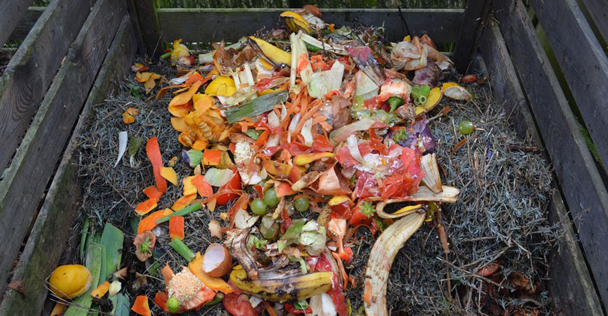
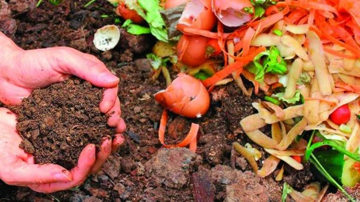

Compostaje comunitario inteligente para barrios sostenibles
El compostaje comunitario es una forma sostenible de gestionar los residuos orgánicos, pero su implantación sigue siendo escasa. Esta propuesta plantea un sistema innovador en el que los vecinos de un barrio colaboran para transformar sus residuos en compost útil, repartido de forma justa y transparente.
¿Por qué apostar por el compostaje comunitario?
- Reduce residuos: menos restos orgánicos acaban en vertederos.
- Disminuye emisiones: menos transporte y menos gases contaminantes.
- Mejora el suelo: el compost enriquece huertos y jardines urbanos.
- Fomenta la colaboración: crea conciencia y unión vecinal.
¿Cómo funciona este sistema innovador?
A diferencia del compostaje tradicional, este modelo introduce un sistema compartido e inteligente que permite controlar el proceso y repartir el compost generado.
Puntos de compostaje por barrio
Se instalan contenedores comunitarios en zonas accesibles para los vecinos.
Registro de aportaciones
Cada vecino registra sus aportaciones mediante una app o tarjeta comunitaria.
Control del proceso
Sensores básicos controlan humedad y temperatura para mejorar el compost.
Reparto del compost
El compost generado se reparte según la participación de cada vecino.
Impacto ambiental positivo
Hasta un 40% de la basura doméstica es orgánica y puede compostarse.
El compost reduce el uso de fertilizantes químicos contaminantes.
Conclusión
El compostaje comunitario inteligente es una alternativa real y sostenible para reducir residuos, mejorar el entorno urbano y fomentar la colaboración entre vecinos. Aunque todavía es poco común, su implantación podría marcar un antes y un después en la gestión de residuos en las ciudades.